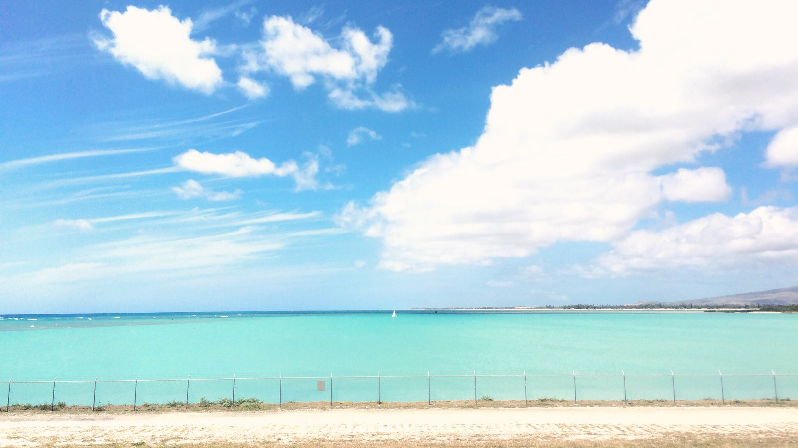

CAREER
14歳 一番レフに出会い、撮影を始める
16歳 Photoshopに出会い、レタッチを始める
19歳 フォトスタジオでカメラマンのアルバイトを2年勤める
20歳 大学の講義にて、HTMLに出会う
21歳 自分でサイト制作をする
24歳 実務にて、簡単なHTML修正を行う

生年月日：1995/07/25
年齢 ：24歳
趣味 ：一眼レフでの写真撮影、読書
特技 ：掃除（徹底的にやります！）

14歳 一番レフに出会い、撮影を始める
16歳 Photoshopに出会い、レタッチを始める
19歳 フォトスタジオでカメラマンのアルバイトを2年勤める
20歳 大学の講義にて、HTMLに出会う
21歳 自分でサイト制作をする
24歳 実務にて、簡単なHTML修正を行う

幼い頃からモノ作りに興味があり、クリエイティブな活動をしていました。
自分の感性を大切にしながら、新しいものをどんどん作り出すことが大好きです。
この科学の世界での格言をモットーに、興味があるものにはまず行動をするように心がけています。
フロントエンドエンジニアをやりたい、という意欲・好奇心をもとに、転職を決意。
現在、独学でウェブサイト制作をしています。
ウェブ制作のみならず、デザイン・ウェブサイト運用改善も出来る
マルチなフロントエンドエンジニアになりたいと考えています。
さらに、現在英語の学習もしているため、将来的にはグローバルな舞台で活躍を目指しています。